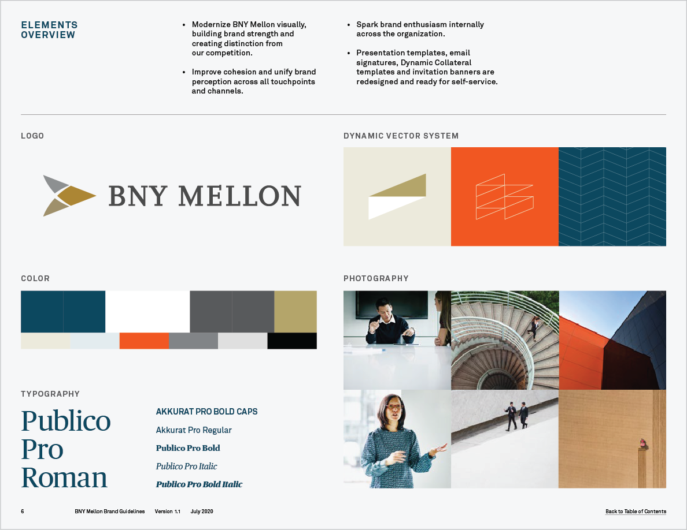
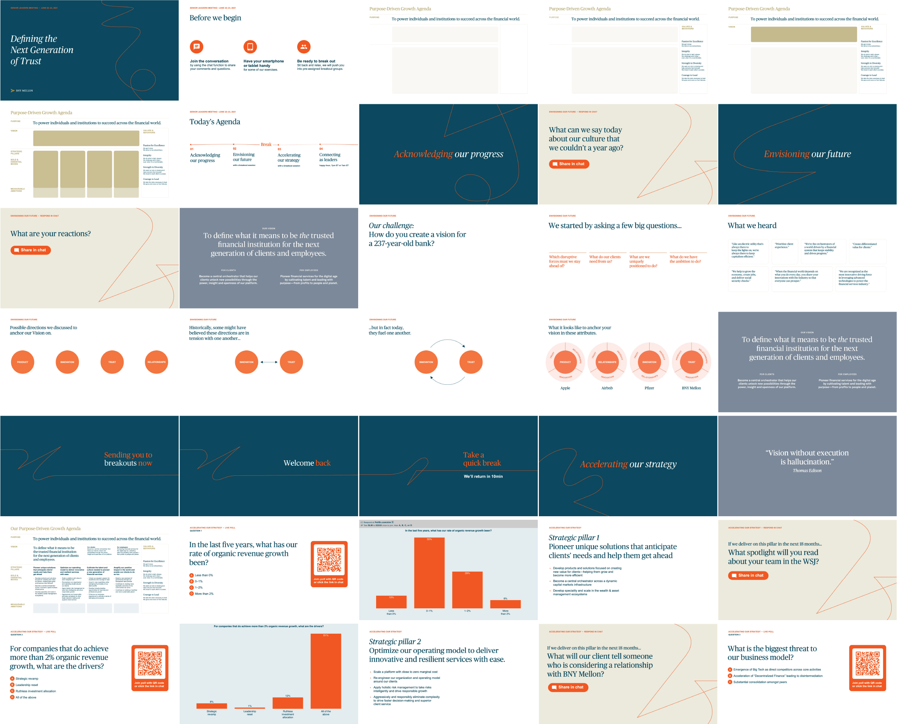

<!DOCTYPE html>
<html>
  <head>
    <meta name="viewport" content="width=device-width, initial-scale=1.0" />
    <title>BNYM ~ Chris Lo</title>
    <link rel="stylesheet" type="text/css" href="style.css" />
    <script src="script.js"></script>
  </head>

  <body>
    <cl-header></cl-header>

    <section class="bodybox">
      <div class="XLG splash">
        
      </div>
      <h1 class="MED title">BNY Mellon</h1>
      <p>
        With a small team, I helped design and execute the launch of a rallying
        Vision during a virtual "Executive Leadership Summit" with BNY Mellon's
        Senior Leaders. This included a rudimentary identity system for the
        event, animated "anthem" video, and branded "swag" which was sent to
        each attendee.
        <br /><br />
        In collaboration with fellow designers, I developed a design direction
        expressing the Vision's concept of "defining trust" as a delicate, human
        connection built on a foundation of existing BNY colors and visual
        assets.
        <br /><br />
      </p>
      <h1>《&nbsp;Context&nbsp;》</h1>
      <p>
        I joined the team in its second phase, after a series of meetings
        focused on creating BNY's "Purpose-Driven Growth Agenda," a document
        which brought Purpose, Vision, and Strategy into a single logical flow.
        My phase was focused on the launch of this Agenda to employees, through
        the spring Senior Leaders' Meeting (SLM).
        <br /><br />
        As one of the oldest financial institutions of America (founded by
        Alexander Hamilton, no less!), BNY had plenty of history to borrow from,
        but they also wanted to set a fresh tone reflective of a new chapter. In
        short, "It can't be too corporate, but it also shouldn't look like a
        fintech startup."
      </p>
      <div class="bento MED">
        
        
        
        
        
        
      </div>
      <p>
        <br />
        Since BNY had an existing legacy and brand system, it felt inappropriate
        to stray too far. We began to explore inspiration from concrete poetry,
        experimental typographers, and linework-heavy illustration.
        <br /><br />
      </p>

      

      <h1>《&nbsp;Final Concept&nbsp;》</h1>
      <p>
        The final concept draws from core BNY colors and visual elements which
        then extends into organic curves and a more nuanced typographic
        approach. We used this slide to explain our approach to the event theme
        with BNY’s head of design. <br /><br />
      </p>

      

      <p>
        <br />
        This visual concept was applied as a microbrand for all event materials,
        and stretched across presentations, facilitator’s guides, animations,
        and various printed assets.
        <br /><br />
      </p>
      
      <h1>《&nbsp;Deep Dive: Manifesto Video&nbsp;》</h1>
      <br /><br />
      <p>
        One of the key moments I helped design was a “manifesto”-style video
        which launched BNY’s refreshed Purpose to its Senior Leaders. Given time
        constraints, I worked with a small group of team members to
        conceptualize and execute this 3-minute video as a primarily vector and
        text-based animation.
        <br /><br />
        I drew final vectors in Illustrator, using a tracing technique I’d
        learned from a previous creative director. These were passed (with
        notes) to the animator as a “storyboard,” then animated, reviewed, and
        synced to an audio voiceover. <br /><br />
      </p>

      <video
        class="LRG"
        src="img/19_BNYM/bnym_narrative_061921_high.mp4"
        autoplay
        muted
        loop
      ></video>

      <h1>《&nbsp;Deep Dive: SLM Presentation Layout&nbsp;》</h1>
      <br /><br />
      <p>
        Another key deliverable for this project was the presentation template
        for the full event. I helped direct a system of layouts to accommodate
        different densities of information, while using color and hierarchy to
        mark different sections of the event. <br /><br />
      </p>

      
    </section>
    <footer>
      <br />
      <br />
      <h1>※</h1>
      <h3>
        Project summary originally written January 5, 2021<br />
        Page last edited: August 17, 2021 <br />
        Project Dates: February–March 2020
      </h3>
      <br /><br /><br /><br /><br />
    </footer>
  </body>
</html>
